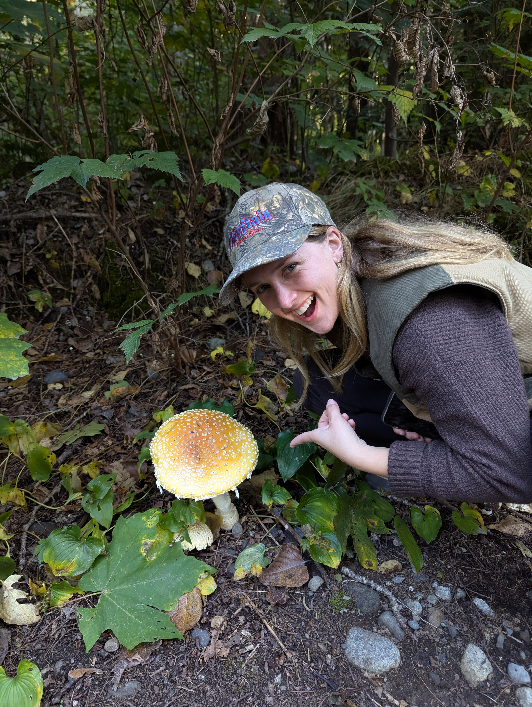
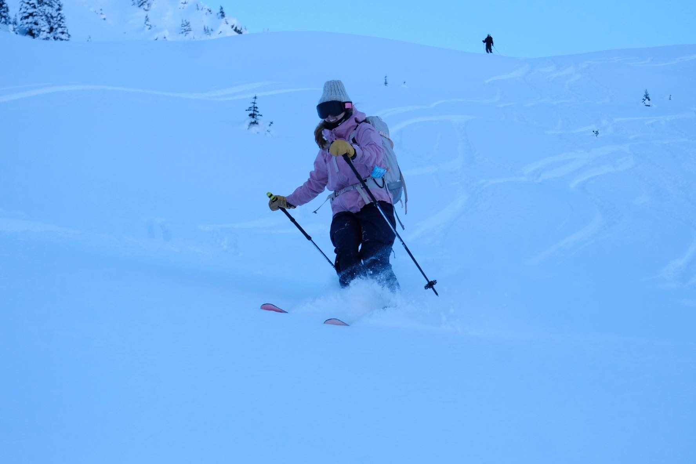
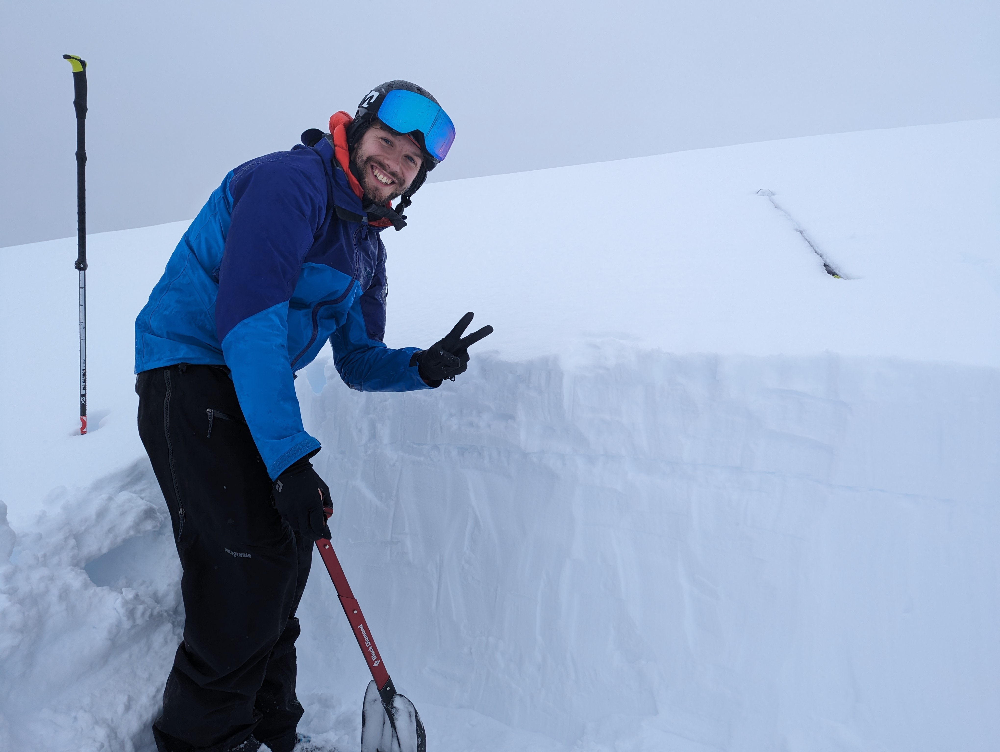
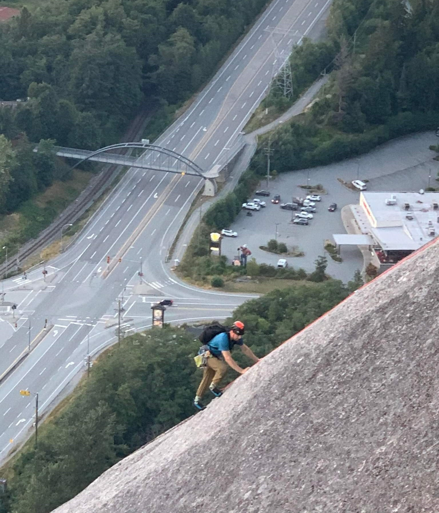

Exploring the coast mountains
Tales Along the Sea-to-Sky Highway
These are my reflections on the summits I've explored, each with its unique stories, challenges, and landscapes.
Foraging for mushrooms
Squamish provides (2025-09)
The first fall rain hits, and suddenly the forest changes. Everything smells alive again — damp, earthy, full of possibilities. That's when the mushroom hunters start to appear. I’ve always been curious, so this year I decided to give foraging a try.
It’s a little daunting at first — every “good” mushroom seems to have an evil twin. One minute you think you’ve found a perfect chanterelle, and the next you’re second-guessing yourself after scrolling through photos of toxic look-alikes. It’s part of the charm though; a quiet puzzle that rewards patience and attention to detail.
Foraging isn’t a sport. There’s no leaderboard or KOM segment waiting at the end of the trail. It’s slower, quieter — a reminder that Squamish’s forests don’t always need to be conquered. Sometimes they just need to be walked, touched, and noticed.
After a few hours wandering through cedar and birch, I come home with a small handful of mushrooms, a muddy jacket, and that calm, grounded feeling that only the forest seems to give. Not a bad trade for an afternoon out.

Opening weekend reflections
2024-11-24
Opening weekend at Whistler always feels special, but this one—November 24th—hit differently. On Saturday, we skied Blackcomb, and on Sunday, I switched it up and snowboarded on Whistler. Both days were incredible, with early-season coverage between 160-190 cm—a rare treat for this time of year.
But the real highlight wasn’t just the snow. It was the feeling of being back. I didn’t realize how much I’d missed snowsports until I was riding the chairlift. Something clicked—a sense of belonging I forget about during the summer. Given that I’m not one to tie identity to activities, that was a peculiar feeling.
Snowboarding on Sunday brought a fresh perspective, too. I grew up skiing, switched to snowboarding in my teens, and returned to skiing at 20. Now, in my second season of exploring snowboarding again, it feels like coming home. Snowboarding takes me back to those teenage years—light, flexible, artistic. On skis, I’m all about charging and hucking; on a snowboard, it’s carving and using the mountain as a playground.
This weekend reminded me of why I love this season so much. The Black Tusk tour earlier in November was fine, but this? This was a reset. Here’s to a winter full of turns, lines, and rediscovery.Black Tusk - 2024-11-03
Early season turns


We start our adventure on an early November morning. Alarm at 5AM. Coffee. Soup in Thermos. Make sure I've got what I need. Go.
We make it to the Rubble Creek trail head at 7AM. We set up our skis as A-frames on our backpacks and get going. There isn't any snow for at least another 1000m. We walk for about 2 hours along what seems to be 100 switchbacks until we hit the Garibaldi Lake / Taylor Meadows turn off. Finally a bit of snow! We keep on walking until we get to the warming hut just past Taylor Meadows campground.
Skins on. Feeling a little rusty, but I get them on. Finally, I can get the awkward weight of skis and boots off my back. So we walk until about 1600m, at which there's a turn off to the Black Tusk trail. We take that and are joined by two other crews of eager beavers. We gladly let them take the lead - that means we don't need to break trail. Yay!
We climb up to about 1900m and wow - what incredible views of Garibaldi lake and the surroundings! This place is so majical, especially with a little coat of snow. And there lies our problem - we only manage to probe about 30-60cm, which is far too little for what we need. We're on a boulder field. That means sharks, core shots, and even injury. After eating lunch and a cold beer, we decide to survival ski back to the trail, sheepish and with our tails between our legs.
Once we reach the trail, luckily, there's a fairly steady decending grade until snowline, so we can ski down the trail all the way back to the warming hut. The rest is just a long boring walk back the way we came through the infinite switchbacks. We are blessed with many types of mushrooms to contemplate along the way down. We make it back to the car, drink a beer, and agree that we'll ride bikes next week-end.
Ski Touring 23-24 Season Recap
Going deeper with more confidence
 Our 2023-2024 ski season was filled with adventure, new challenges, and unforgettable moments. It all kicked off in November with an incredible powder day at Brandywine Mountain, a perfect start to the season. I spent a lot of time ski touring around Blackcomb, exploring areas like Circle Lake, Body Bag Bowl, and Decker. So much great terrain right off resort!
One of the biggest highlights for me was completing my AST2 (Avalanche Skills Training Level 2) course. It was an eye-opening experience that really helped me understand avalanche safety, from digging snow pits to inspecting conditions and evaluating terrain. The course gave me the confidence to tackle more challenging terrain, knowing I was better equipped to make informed decisions in avalanche zones.
We also had the opportunity to visit Shovelnose, off the base of Mount Fee, where we faced considerable avalanche conditions. Despite the risks, our confidence from the course allowed us to safely enjoy the terrain, reinforcing the importance of safety training.
Other memorable trips included skiing in the Steep Creek and Duffy Lake regions, and revisiting Cayoosh Mountain, which was another fantastic outing.
Even though the snow wasn’t perfect last year, getting outside, waking up early, and embracing the cold made each adventure worthwhile. It was all about the journey, the fun, and the joy of skiing, no matter the conditions. Here's to another great season next year!
Climbing the Stawamus Chief
A big achievement from my first year of climbing
Climbing the Stawamus Chief with my buddy Leo, an expert rock climber, was a highlight of my first year climbing. After a season focused on sport climbing and building strength, I finally ventured into trad climbing. Tackling the Chief felt huge, with all its runouts and adventure climbing, but Leo's guidance made it possible.
We began from the Apron, and along the way, Leo helped three different parties. The first was a couple of climbers from the UK who had gotten off-route, and Leo guided them to safety. Higher up, near Memorial Ledge, we stopped another group from rappelling in the wrong place. Finally, we avoided a bottleneck by taking a more challenging but clever alternate pitch Leo knew, which gave us the buttress all to ourselves.
It took us a total of 4 hours to reach the top. People congratulated us, and while Leo took it in stride, I felt proud. It was the perfect capstone to a season of hard work and a thrilling first year of climbing.